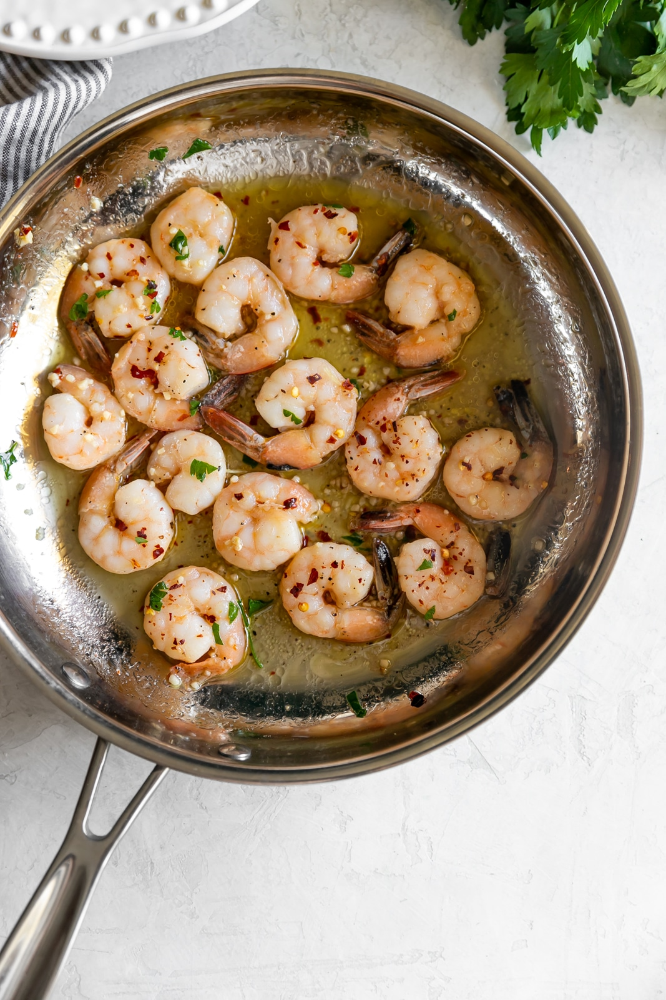
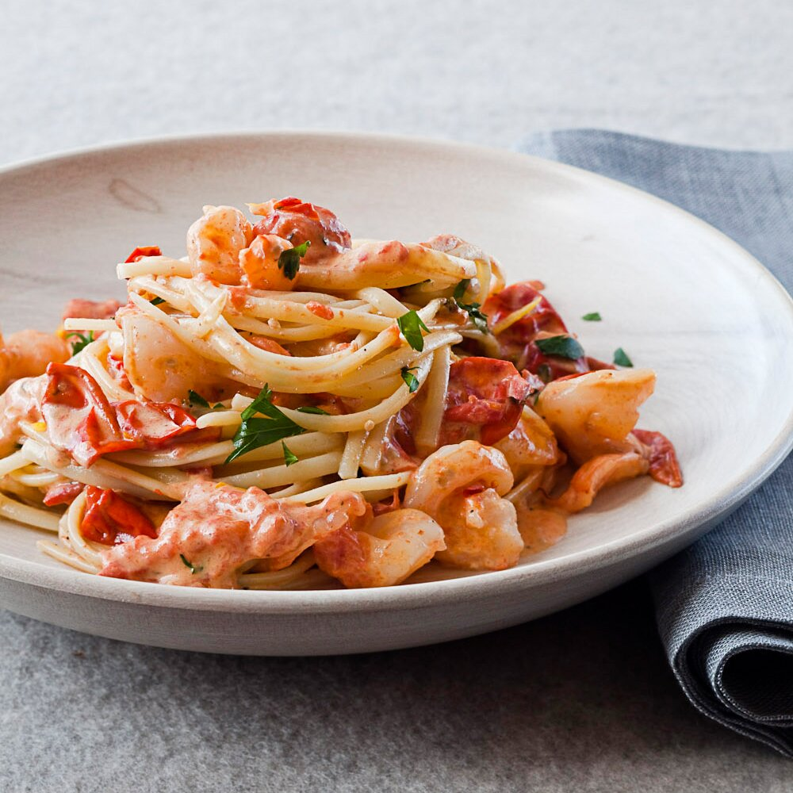

Ingredients:
- 10 oz Angel hair pasta
- Kosher salt
- 2 tbsp Olive oil
- 1 tbsp chopped Garlic
- 1/4 tsp Crushed red pepper flakes
- 1 lb Shrimp peeled and deveined
- 3/4 cup White wine
- 1 Lemon (juiced)
- 1 1/2 cups Tomato (chopped)
- 2 tbsp Butter
- 1/2 cup Basil (chopped)
- Parmesan cheese (grated)
Steps:
-

-
1.
You’ll first need to salt a pot of water and cook the angel hair pasta according to package instructions. You want the pasta to be al dente (it it’s too mushy, it won’t hold up next to the shrimp). Once the pasta is cooked, reserve a bit of the cooking water before draining.
-

-
2.
Meanwhile, sauté the garlic and red pepper flakes in a little olive oil just until fragrant. Add the shrimp and cook until pink throughout.
-

3.
Add in the wine, lemon juice, tomatoes, and butter, and cook until the butter is melted. Gently stir in the drained pasta and pour in a little pasta water to make the shrimp scampi more saucy, if desired. Garnish your homemade shrimp scampi with torn basil leaves and grated Parmesan cheese.